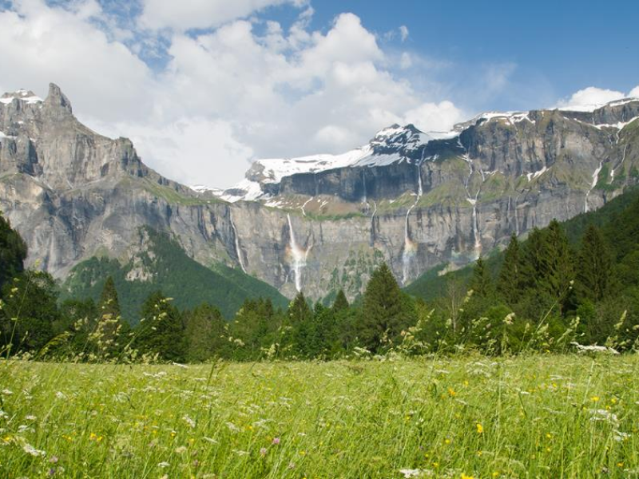

La Savoie
Des paysages à pertes de vue ...
Accueil
Lieux incontournables
Marchés & Foires
Actualités
Découvrez 10 lieux incontournables, que nous vons seléctionnez pour vous !
FAKE Lieu

FAKE Lieu
FAKE Lieu
FAKE Lieu